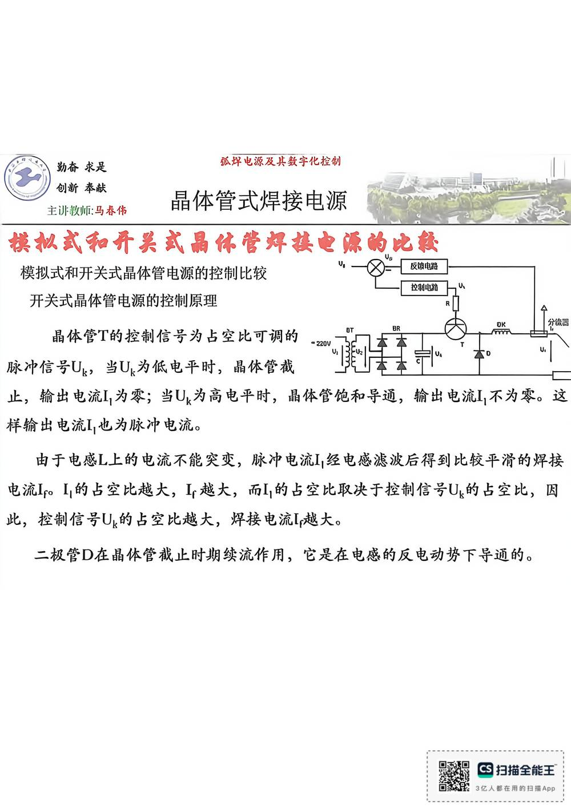

13 手写笔记/6~8周/h-w2-026 模拟式和开关式晶体管电源的控制比较
h-w2-026 模拟式和开关式晶体管电源的控制比较
📷 原图：
6~8周 焊接电源(差最后一节课)(1).pdf第 26 页（整页扫描，本库内嵌h-w2-026.jpg）
模拟式和开关式晶体管电源的控制比较

本页文字（OCR 整理）
- 主非救师：马春伟
- 模拟式和开关式晶休管焊接电源的比较
- 模拟式和开关式晶体管电源的控制比较
- 反钠电路
- 控别电沿
- 开关式晶体管电源的控制原理
- 脉冲信号Uk，当Uk为低电平时，晶体管截
- 品林管的拉制信号为古堂北可翔的一直配季委デ
- 止，输出电流！，为零；当U，为高电平时，晶体管饱和导通，输出电流［，不为零。这
- 样输出电流I，也为脉冲电流。
- 由于电感L上的电流不能突变，脉冲电流L，经电感滤波后得到比较平滑的焊接
- 电流IpoL，占空比越大，L越大，而L占空比取决于控制信号Ug占空比，因
- 此，控制信号U哟占空比越大，焊接电流L越大。
- 二极管D在晶体管截止时期续流作用，它是在电感反电动势下导通的。
本页重点（自动标记：含"定义/特点/要求/结论/公式"等，或与课件原句高度一致）
- 开关式晶体管电源的控制原理
- 二极管D在晶体管截止时期续流作用，它是在电感反电动势下导通的。
OCR 说明
文字由 macOS Vision 识别手写体/翻拍页面得到，错字难免（如"弧"误识为"孤"）；重点标记据此推断，请以页图为准。
对应讲义页
- p157 · 优点：输入端只需要较小的电压
关联
- ← 上一页 · 总览 · 下一页 →
- 讲义：00 第4章 电子控制型 导航 · 概念：04 概念地图